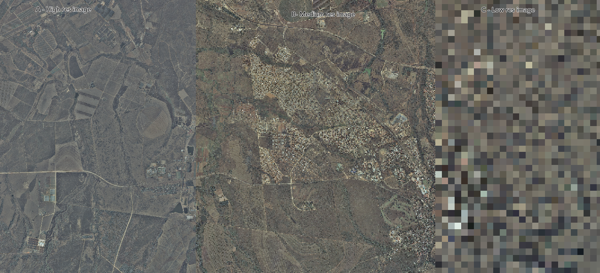
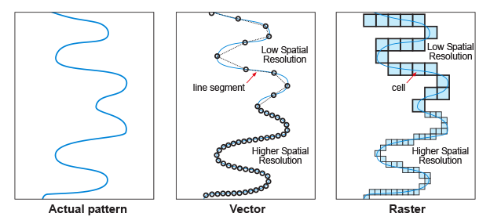

Spatial Resolution refers to the scale you are working at. Scale can be indicated with a descriptive term such as local, regional, national or global.
The spatial resolution of both raster and vector data is important.
In raster data the resolution is the pixel size or cell of the data (e.g. 250 m) or, in another sense, it is the size of the smallest object that can be detected, or ‘minimum mapping unit’. For example a raster data set representing ‘wetlands’ might have been generated using a technique that could only detect wetlands greater than 1 ha in extent. Therefore, no matter what the pixel resolution of the data, it has a 'resolution' of one hectare.

A: high-resolution image, B: medium-resolution image, C: Low-resolution image
With vector data the term ‘minimum mapping unit’ is usually used instead, since in a GIS the scale of vector data can be changed easily. The minimum mapping unit or the smallest addressable unit is the smallest object that is mapped, in the same sense as with rasters above. For example, in a land cover map with a minimum mapping unit of 1 ha, only distinct land cover patches larger than 1 ha will be represented. Smaller ones will be lost inside bigger ones
Higher resolution data uses up more memory than lower resolution data and also uses more processing power. If you are serving spatial data or maps over the Internet, lower resolution data will consume less bandwidth and be transmitted faster. Therefore one usually has to find a compromise between resolution and available computer resources.
